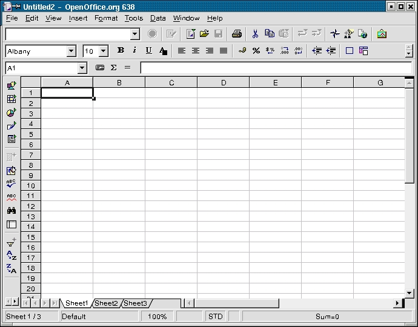
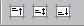

How to Carry out Simple Calculations
and
Format Cells and Sheets in a Folder.
provided by
the OpenOffice.org Documentation Project
Table of contents :
A quick introduction. Introduction to the tools available in the Calc environment
1. A quick introduction. Introduction to the tools available in the Calc environment.
Before you start doing those highly advanced calculations that you will no doubt be spinning off in no time, let's take a brief look at your work surroundings to familiarize yourself with the tools that have been made available.

Just below the title bar (the one with the butterfly) you will see four command toolbars :
A Menu toolbar
A Function toolbar
An Object toolbar
A Calculation toolbar
The Menu toolbar contains the main menus of the Calc module. The Function toolbar provides user access to function icons such as Open, Save, Copy, Cut, Paste and other common tasks in OpenOffice.org. The Object toolbar comprises a set of tools that are specific to calculation and cell formatting (number format, text alignment, borders). Finally, the Calculation toolbar is intended for the entry of formulae necessary for your calculations, and also shows you the position of the cursor within the spreadsheet.
NB : Some people believe that these toolbars can not be changed, but this is not actually true. It is in fact possible to modify the icons and the associated functions according to your needs by clicking on the right mouse button of the main toolbar or the Object toolbar. A context-sensitive menu will then appear. Next, choose `Configure' or `Customize' in order to change the contents of the toolbar. You can also select `Visible Buttons' and add or remove the buttons of your choice. You can also add an extra toolbar from the same context-sensitive menu, called Options toolbar which , by default, is not shown. This bar contains several additional buttons that are in fact useful positioning or modification tools.
On the left of the screen, you will notice the Instrument toolbar (shown here on the right). This toolbar provides the tools that you will need to work with your spreadsheet. The basic functions of the toolbar are explained in this `How-to'. At the bottom of the screen, you will notice the Status Bar. This bar provides essential information such as the sheet that you're currently working on, the page style, and in normal mode, the sum of the cell in which the cursor is situated.
NB : A right mouse button click in the box where Sum is written will give you access to a context-sensitive menu that proposes other choices, such as mean, maximum, minimum...
You will also notice that the folder you have just opened contains three worksheets by default, indicated by the presence of three small tabs above the Status Bar and bearing the names : Sheet1, Sheet2, Sheet3.
The spreadsheet is represented as a grid comprising cells, with each cell bearing a unique reference. A cell is referenced by its column (vertical reference), given here as a letter (e.g. A...Z etc.), and its line (horizontal reference), given here as a number (e.g. 1...65000 etc.), These references appear as grey column and line headers on the spreadsheet. Thus, the first cell in the first line (the one at the uppermost left hand corner) bears the reference A1.
2. Initial Calculations
If you 've jumped to this section without having read the preceding paragraphs, it might be a good idea to go back and read them now anyway, since the terms that will be used here were introduced previously. However, if you too impatient, tired, excited or even bored to do that , read on and we'll take a look at how to carry out additions with Calc !
As mentioned above, the boxes that you see formed by the grid are called cells. You can enter text, numbers or formulae in these cells. Of course, the whole "raison d'etre" of a spreadsheet application is to be able to carry out calculations within these cells.
Anyway, enough of the waffle, let's go and try our first calculation ! :
In the cell A1 type (without the quotes) "=3"
Then press `Enter' on your keyboard
And you should see "3" appear in the cell, since the result of the calculation appears automatically.
Your cursor should now be in the cell immediately below the cell A1, but if you click once more in cell A1, you will see the mathematical operation that you have just entered shown in the Calculation toolbar .
Let's carry on : now type 6 in cell A2 and we'll request the result of the addition of cell A1 to cell A2 and have the result displayed in cell A3. Here's how it's done :
Place the cursor in cell A2, and type 6
Confirm this data entry by pressing the button 'Enter', and your cursor will move to cell A3
Type (without quotes) "=A1+A2"
Confirm with `Enter', and you will see the result displayed as "11" in cell A3
This last calculation was carried out using the cell references and not discreet values.
Let's go ever onward, and try adding up a whole column of cells, i.e. a range. Click on Sheet2 to get a clear sheet.
Type in some numbers in cells A1 to A9
Confirm with `Enter', and the cursor will move to cell A10
Type (without quotes) "=sum(A1:A9)"
Confirm with `Enter', and you will view see the result of the addition displayed in cell A10, and the formula will be visible in the Calculation bar.
By typing the colon [ : ] between the cell references, you have told the software that you want to add up the values in the range of cells from A1 to A9. The range is indicated on the screen by a red border.
By typing `sum ()', you are telling the software the type of mathematical operation that you want to carry out on the referenced cells that are between parentheses.
NB : You'll probably have noticed when you started to type `sum', that Calc suggested the completion of the formula. This is the Autocomplete function, with which it suffices to press `Enter' if you agree with the suggestion made by StarOffice, and your cursor will be positioned automatically between the parentheses so that all you have to do is enter the ranges.
Right, let's do it again, only this time we'll replace the colon by a semi-colon (;) between A1 and A9. You'll notice that the result is completely different. In this case, you have only added up the contents of cell A1 to those of cell A9 and not the range. Thus, in order to add two ranges of cells, you would type "=sum(A1:A9;B1:B9)".
You can also select the ranges to be added together using the mouse. After having typed "= sum(" into the target cell, click on the first cell and whilst holding the mouse button down, drag the mouse to the last cell of the range, and then let go of the mouse button, and you will see the end of the formula inserted in automatically into the Formula bar.
NB : If the number that is displayed is too big to be displayed completely in the cell, it will be replaced by a series of musical flat symbols (###). In order to adjust the size of the cell, all you have to do is click on the right-hand column separator of any given column and drag the separator rightwards (to broaden) or leftwards (to narrow). The same function can be reached through the command Format - Column - Optimal width.
About references
It is important to grasp the basics of references when you want to carry out calculations on cells containing formulae.
A relative reference is a range
whose references are adjusted when the formula is moved :
e.g.. :
if you copy the formula "=sum(A1:A9)" to column B, it will
become "=sum(B1:B9)"
An absolute reference is used when a calculation has to refer to a precise cell of the spreadsheet. This is written for example $A$1 to designate the absolute reference for column A and line 1. Thus $A1 is used as the absolute reference to column A and A$1 for the absolute reference to line 1.
Now that we've finished learning about simple calculations, let's exercise our brains (and fingers) with some subtractions, multiplications and divisions !
3. Personalized formatting
Your spreadsheet contains three sheets, Sheet1,2,3. We'll give each sheet a name (after all, it does make it easier to remember them !). Right-mouse button click on the tab of Sheet1, and a context-sensitive menu will appear offering you to `Rename' Click on this option. In the following window, enter the name you wish your sheet to have and click on `OK', the sheet will then display the new name in the tab.
You'll also have noticed that this context-sensitive menu offers you the choice of inserting or deleting the sheet as well as moving or copying it. Each time, a windowed dialog box will allow you to specify your precise choice.
Let's do some work on cell formatting. Suppose you want to enter the title of your spreadsheet over several sheets, do as follows :
Select all the sheets in which the title is to appear. Then with the mouse, click on the first cell and drag the mouse to the last cell of the title .
In the menu toolbar, select : Format - Merge Cells- Define
More often than not, you will want to centre the title over the selected cells. In order to do so :
Select the title cell
In the menu toolbar, select: Format - Cells
In the dialog box that appears, select the tab `Alignment'
Click on the button `Center'
You can also select other options in this dialog box if you wish
Click on `OK'
If you want to set a fine border around your table, select the cells, and from the menu toolbar choose Format - Cells and click on the tab `Borders'. Choose the thickness of the border that suits you as well as the border that you wish and click on `OK'.
You will notice that the dialog box `Cell Attributes' comprises a certain number of tabbed pages relating to cell formatting (Fonts, Font Effects, Alignment). You can also reach these tabbed pages by right-mouse button clicking on a cell and selecting `Format cells'. And of course, the function toolbar also contains some of these formatting functions.
Let's look at the last three icons of the function toolbar. These three icons allow you to position text at the top, middle and bottom of a cell respectively. Very handy !
One last thing, in order to make our cells containing text to stand out on the sheet from those containing numbers and formulae, you can use the `Value Highlighting' :
From the menu toolbar, choose View - Value Highlighting,
You will note that all of the text is displayed in black, all of the numbers in blue and all of the formulae in green.
NB : In order to directly format your cell as one containing text, enter an apostrophe ( ` ) into the cell before typing your word , e.g. : `Price
At last , our sheet is starting to take shape !
Let's look at the page settings now. Perhaps you find it easier to work with landscape style pages, so do as follows :
From the menu toolbar, choose Format - Page
Click on the tab `Page'
At the section 'Orientation', click on the radio button `Landscape'
Confirm with `OK'
In order to check that your sheet has indeed been saved in the landscape format, click on File - Preview in the menu toolbar.
Staying now with the page dialog box for a while, you can add a header, footer, and of course page numbers.
Let's look at this aspect more closely :
From the menu toolbar, choose Format - Page
Click on the tab `Footer'
In the window that appears, click on the bow that says `Footer on'
The button `Options' allows you to add a border or background to the footer
Click on the button `Edit'
In the window that appears, you will see three smaller windows and a series of icons. The smaller windows correspond to tabulation marks inserted into the footer and the icons to field instructions. The one that we're interested in has a musical flat sign (#) on it .
Place your cursor onto the small window that you wish to use
Click on the icon `Page' (illustrated by a single #), you will see the page number written into the selected window
Click on `OK' to return to the `Page Style' window.
Click on `OK' to close this window.
NB : You can of course insert any text that you want into the header or the footer, and in the same way, your company or group logo.
4. Printing your work
It may be that you only want to print part of your spreadsheet, or even only one sheet, or on the other hand, maybe the whole workfolder.
In order to print just an area of your sheet proceed as follows :
Select the zone you wish to print with the mouse or the keyboard
Choose Format - Print ranges... from the menu toolbar.
Click on `Define'
You will see the selected print range appear on the sheet as two slightly darkened grey lines. You can check that you've selected the correct area by looking at the preview of the range to be printed.
NB : In the drop-down menu under Format - Print ranges, you can also add other ranges of your document to be printed. Select the range and click on Add. This second print range will be printed on a second page (even though it forms part of the same sheet screen).
In order to print a single sheet from your workfolder:
click on File - Print from the menu toolbar
In the dialog box that appears, under `Print Range' click on the radio button `Pages' and enter the page number that you wish to print out.
Click on `OK' to start printing
In the same Print range field of the dialog box, you could also have indicated for example (2,3) to print page 2 and page 3 or even (2-5) to print from page 2 to page 5 .
A quicker way is to select the sheets to be printed and then to click on the print icon in the function bar. To do this :
Click on the sheet tab at the bottom of the sheet and select the ones you wish to print by holding down the CTRL key on your keyboard. In this way, you do a multiple selection of the sheets
Click on the icon `Quick printing' in the function toolbar. Off it goes !
To undo your selection, click once more on the sheet tab and hold the CTRL key down.
In order to print only certain columns or lines from your sheet :
Select the lines or columns to print
Select `File - Print' from the menu toolbar
In the dialog box that appears, click on the box `Selection' in `Print range'
Click on `OK'
5. Credits
Author : Sophie Gautier
Thanks to : Alexander Thurgood for his precious help
Intgr by : Gianluca Turconi
Last modified : January 16, 2002
Contacts : OpenOffice.org Documentation Project http://documentation.openoffice.org/index.html
Translation : Alexander Thurgood